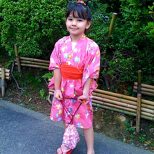

Olá! Eu sou a Yumi
Tenho 18 anos, sou uma mulher cis, estudante de Design Digital na Universidade Anhembi Morumbi e sou Aprendiz na área de suporte de TI na B3.
Aqui vou falar um pouco sobre a minha Narrativa Pessoal =)
Tenho 18 anos, sou uma mulher cis, estudante de Design Digital na Universidade Anhembi Morumbi e sou Aprendiz na área de suporte de TI na B3.

Nasci em São Paulo, mas dos meus 3 aos 7 anos morei em Yokohama, no Japão.
Sou muito ligada às minhas raízes orientais e mesmo após voltar ao Brasil, continuo
inserida e participando de eventos relacionados à cultura japonesa.
Em 2019, consegui uma bolsa do governo japonês e realizei um intercâmbio de um mês no Japão,
o que apenas me aproximou mais da minha cultura e a minha paixão por ela.
Atualmente moro na zona norte de São Paulo e não penso em me mudar para o Japão.
Gostaria de seguir minha carreira na área de TI, ainda estou pensando se monto ela na área de Web Design
ou Infraestrutura e suporte.
No entanto, sei que ainda tenho muito o que aprender pela frente, então estou aproveitando o máximo
de oportunidades possíveis para me desenvolver tanto pessoalmente quanto profissionalmente.